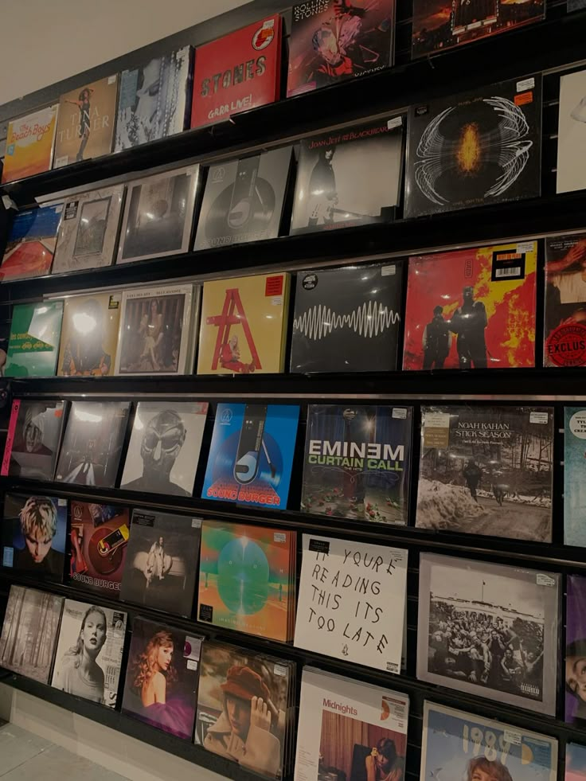
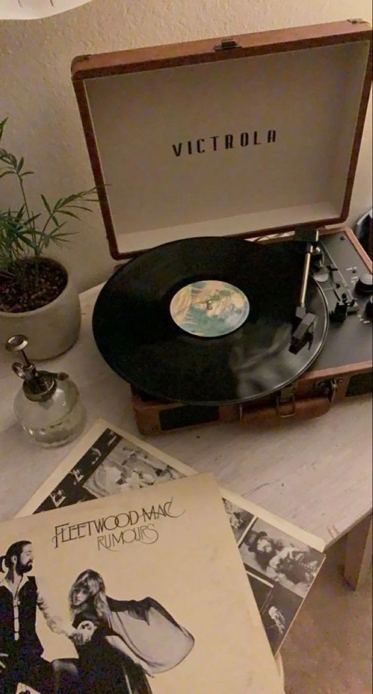
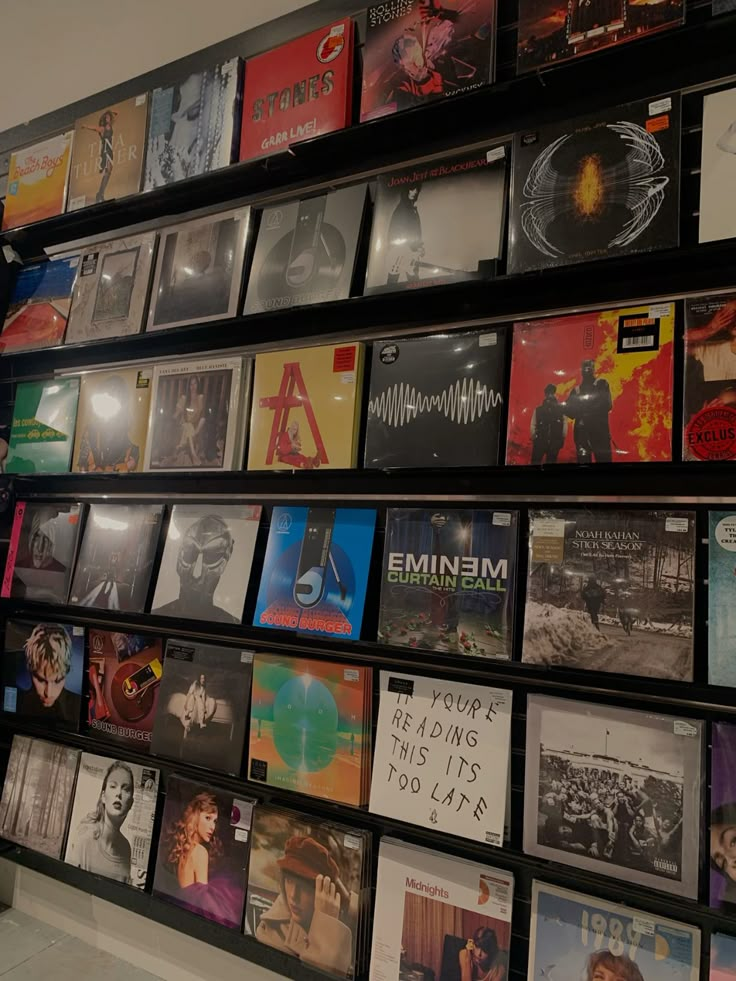
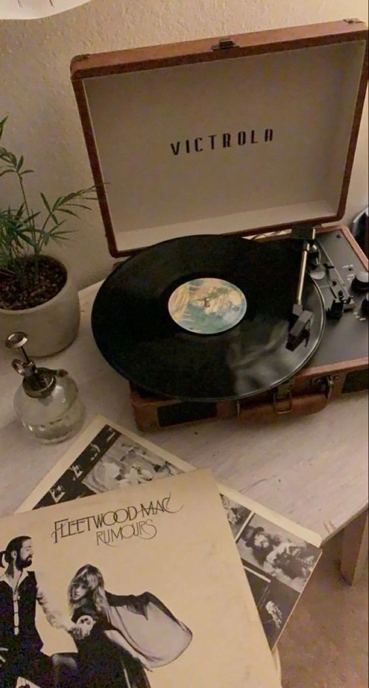

Recomendaciones Musicales para Inspirarte
 



Melodías que te acompañan
La música tiene el poder de cambiar nuestro estado de ánimo, hacernos viajar en el tiempo o simplemente acompañarnos en el día a día. Hoy te recomiendo tres géneros que valen la pena.
Si te gusta el R&B, estos son los artistas destacados del momento 🎶
El R&B actual mezcla lo sensual con lo melódico. Estos artistas destacan por su estilo único, voces suaves y letras profundas.
Para los fanáticos del rock, estas son las 3 canciones más clásicas 🎸
Con guitarras, letras icónicas y mucha actitud, estas canciones marcaron una época y siguen sonando con fuerza. Ideales para un viaje en ruta.
Para un día relajado, música tranquila 🎧
Si buscás concentrarte o bajar un cambio, estas canciones suaves y atmosféricas son la compañía ideal. Melodías delicadas para momentos de descanso.
✔️ Tip musical
Armá una playlist con canciones que te hayan marcado en distintas etapas. Te vas a sorprender con todo lo que revive.
Escucha esta nueva canción para levantar el ánimo!
¿Querés descubrir música nueva?
Explorá el Top 50 Global de Spotify para expandir tu universo musical.
← Volver al inicio